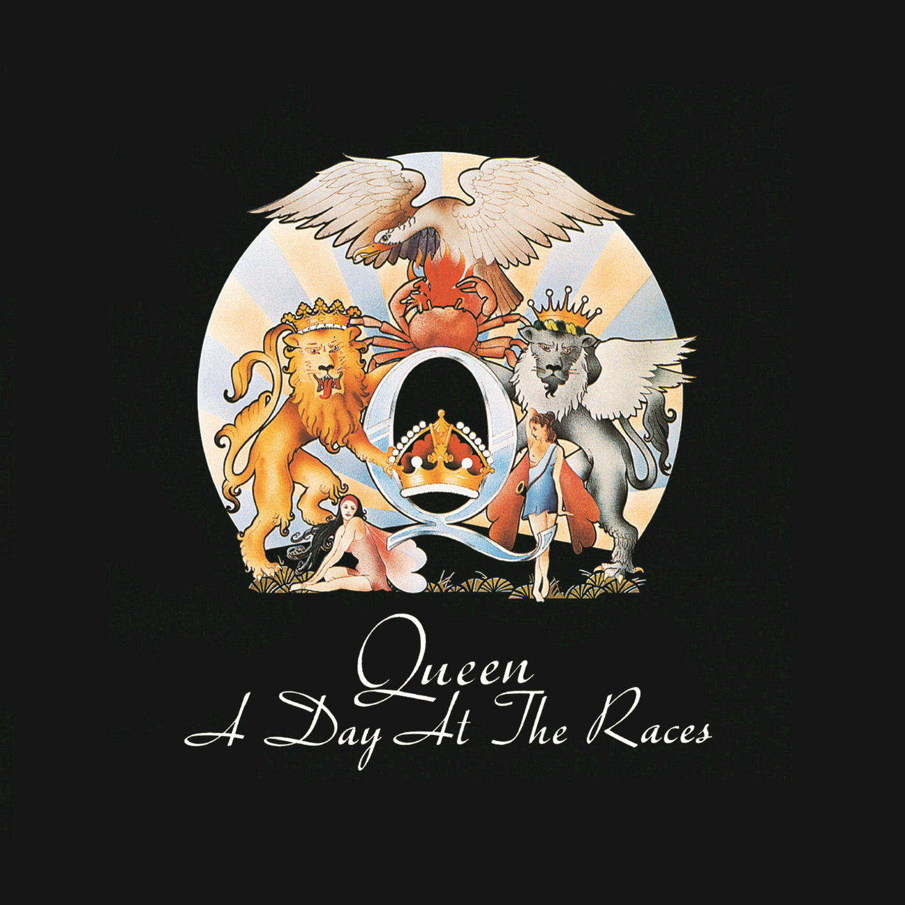
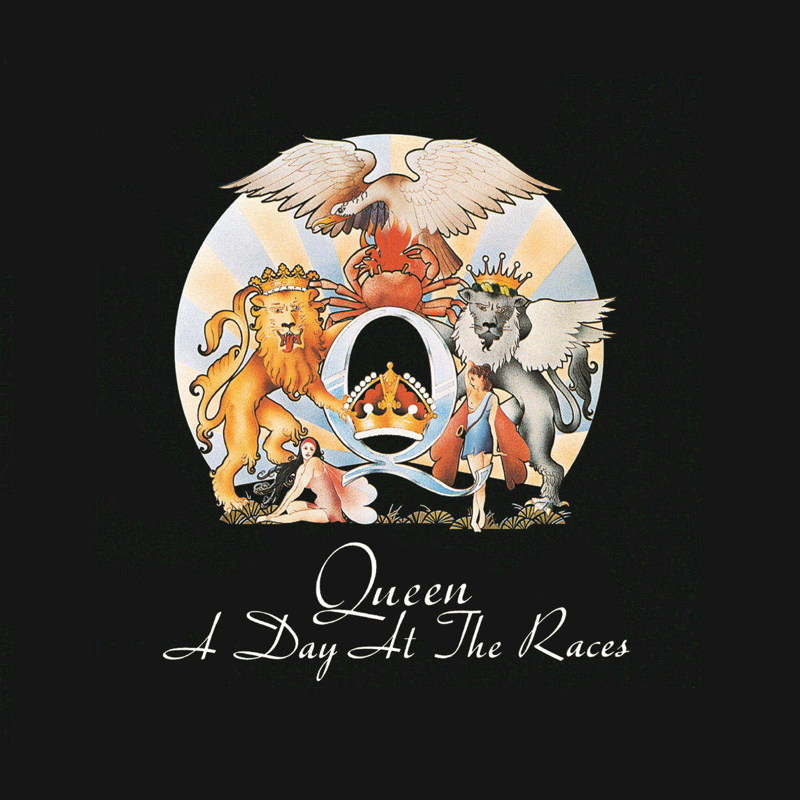

Day 19
 

Queen - Somebody To Love - A Day At The Races - 1976
A later LIVE performance.
皇后乐队的音乐总能给人一种归属感，让人情不自禁的加入进去。他们大部分最受欢迎的歌都是这样。我想这也是Freddie Mercury无与伦比的舞台掌控力的一个因素。
Queen’s music always make you feel belong, makes you want to join them. I found most of their popular hits like this. It might be one of the reasons of Freddie Mercury’s fantastic stage magic.
Can anybody find me somebody to love? Ooh, each morning I get up I die a little Can barely stand on my feet (Take a look at yourself) Take a look in the mirror and cry (and cry) Lord, what you're doing to me (yeah yeah) I have spent all my years in believing you But I just can't get no relief, Lord! Somebody (somebody) ooh somebody (somebody) Can anybody find me somebody to love? I work hard (he works hard) every day of my life I work 'til I ache in my bones At the end (at the end of the day) I take home my hard earned pay all on my own I get down (down) on my knees (knees) And I start to pray 'Til the tears run down from my eyes Lord, somebody (somebody), ooh somebody (Please) can anybody find me somebody to love? Everyday (everyday) I try and I try and I try But everybody wants to put me down They say I'm going crazy They say I got a lot of water in my brain Ah, got no common sense I got nobody left to believe in Yeah yeah yeah yeah Oh, Lord Ooh somebody, ooh somebody Can anybody find me somebody to love? (Can anybody find me someone to love) Got no feel, I got no rhythm I just keep losing my beat (you just keep losing and losing) I'm OK, I'm alright (he's alright, he's alright) I ain't gonna face no defeat (yeah yeah) I just gotta get out of this prison cell One day (someday) I'm gonna be free, Lord! Find me somebody to love Find me somebody to love Find me somebody to love Find me somebody to love Find me somebody to love Find me somebody to love Find me somebody to love Find me somebody to love love love Find me somebody to love Find me somebody to love Somebody somebody somebody somebody Somebody find me Somebody find me somebody to love Can anybody find me somebody to love? (Find me somebody to love) Ooh (Find me somebody to love) Find me somebody, somebody (find me somebody to love) somebody, somebody to love Find me, find me, find me, find me, find me Ooh, somebody to love (Find me somebody to love) Ooh (find me somebody to love) Find me, find me, find me somebody to love (find me somebody to love) Anybody, anywhere, anybody find me somebody to love love love! Somebody find me, find me love